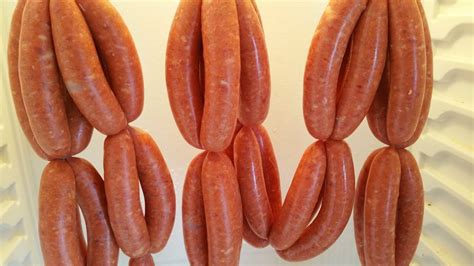

Seafood Sausage

This is an oceanic take on the classic land animal sausage!
Pictured above is an image of a classic land animal sausage,
but just pretend that it's a seafood sausage.
Or just more familiarly called "Seasage"
Ingredients
- Shrimp
- Salmon
- Breadcrumbs (I think)
- Salt and Pepper, probably
- Other
Steps
- Add all ingredients to a food processor
- Wrap mush in saran wrap
- Wrap saran wrapped mush in tin foil
- Boil tin foiled mush
- Unwrap
- Pan Fry
- Enjoy!